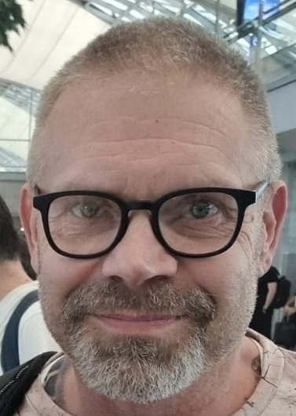

Hei, olen Tommi Konttila
Työskentelen ICT-asiantuntijana Suomen Kansallisteatterissa ja opiskelen iltaisin Lapin AMK:ssa tieto- ja viestintätekniikan insinööriksi, suuntautuen ohjelmointiin. Asun Lohjalla.
Työkokemus
ICT-asiantuntija, Suomen Kansallisteatteri – 2010–nykyhetki
Vastaan IT-infrastruktuurista, verkoista ja palvelimista sekä tietoturvasta. Työhön kuuluu myös pilvipalveluiden (O365) hallinta, hybridiympäristön ylläpito, laitteistojen ja järjestelmien käyttöönotto sekä kilpailutukset ja toimittajayhteistyö. Toimin esihenkilönä päivittäisestä ICT-tuesta vastaavalle työntekijälle.
Lead Technician, Oy Danfoss AB – 2001–2010
Vastasin IT-infrastruktuurista, palvelimista ja käyttäjätuesta Suomessa ja Baltian maissa. Osallistuin EMEA-alueen IT-migraatioprojekteihin tiiminvetäjänä. Työ sisälsi myös ITIL-pohjaisten prosessien mukaista incident- ja problem managementia sekä toimittajayhteistyötä.
Erilaisia tehtäviä, Espoon kaupunki – 1991–1997
Liikuntavirasto ja teiden kunnossapito.
Varusmiespalvelus, Laivasto – 1988
Koulutus
- Tieto- ja viestintätekniikan insinööriopinnot (Lapin AMK, 2023– ) – suuntautuminen ohjelmointiin
- Tieto- ja viestintätekniikan ammattitutkinto (Datanomi, AT) – Taitotalo, Helsinki (2020–2021)
- Tietokoneasentajan erikoisammattitutkinto – Amiedu, Helsinki (2000–2001)
- Tietokoneasentajan ammattitutkinto – Amiedu, Helsinki (1999–2000)
- Automaatiotekniikan perustutkinto – Amiedu, Helsinki (1997–1998)
Microsoft-koulutukset
Microsoftin serveri- ja client-puolen koulutuksia (Windows-työasemat, Windows Server, Exchange, ISA, MDT – järjestelmien käyttöönotto ja automatisointi).
Opinnot (Lapin AMK)
Suuntautuminen ohjelmointiin.
Ohjelmointiin ja ohjelmistotuotantoon liittyviä kursseja
- Johdatus ohjelmointiin, Olio-ohjelmointi
- Full Stack -ohjelmointi, Web-kehitys ja web-ohjelmointirajapinnat
- Mobiiliohjelmointi & edistynyt mobiiliohjelmointi
- IoT-ohjelmointi, Peliohjelmointi, XR-ohjelmointi
- Ohjelmistotekniikka
- Ketterä järjestelmäkehitys ja ketterä projektinhallinta
Muu opintosisältö
Matematiikka, mekatroniikka, robotiikka, tietoverkot sekä kieliopintoja.
Harrastukset ja vapaa-aika
Harrastan säännöllisesti kuntosaliharjoittelua ja erilaisia kestävyystreenejä, joilla ylläpidän hyvää fyysistä kuntoa ja jaksamista. Vapaa-ajallani syvennyn myös kotiautomaatioon ja IoT-projekteihin. Olen toteuttanut erilaisia järjestelmiä käyttäen ESP32- ja Raspberry Pi -laitteita sekä ohjelmistoja ja työkaluja kuten Node-RED, InfluxDB ja MQTT. Projektit sisältävät mm. sensoreiden hyödyntämistä, ympäristöolosuhteiden mittausta ja ohjausratkaisujen rakentamista.
Persoona ja vahvuudet
Olen periksi antamaton ja pitkäjänteinen tekijä – en luovuta ennen kuin asiat toimivat hyvin. Vuosien työkokemus on tehnyt minusta helposti lähestyttävän ja ratkaisukeskeisen: tulen toimeen erilaisten ihmisten ja tilanteiden kanssa.
Tavoitteet ja tulevaisuuden visio
Haluan hyödyntää ohjelmointia ja automaatiota työssäni, jotta manuaalinen työ vähenee ja laatu paranee.
Näen harrastukseni kasvavan sivutoiminnaksi: käytännössä testattuja kotiautomaatioratkaisuja, joilla seurataan ja säädetään kodin olosuhteita fiksummiksi.